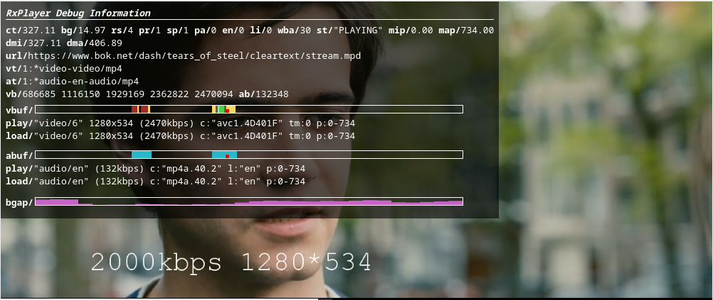

Displaying the RxPlayer’s debugging element
The DEBUG_ELEMENT feature is an experimental (meaning its API can still evolve
from version to version) feature allowing to render an HTML element displaying
debug information that might be interesting while debugging playback.

That element displays various metrics, some of the RxPlayer configuration currently set and displays information on the content of the various buffers. Details on everything that may be diplayed is described lower in this page.
Before that feature, each application generally created its own way of displaying debug information.
Using one directly defined in the RxPlayer API instead allows to:
-
Use a default and complete debugging element, if you don’t want to have to create one from scratch
-
Display debugging information that is not even available through the API, like a representation of the content in the various buffers.
Importing the DEBUG_ELEMENT feature
This feature is not present in default builds to prevent adding unnecessary code to codebases that don’t need it.
As such, to add it, you will need to rely on the minimal
build of the RxPlayer and you will need to add the
DEBUG_ELEMENT experimental feature:
import RxPlayer from "rx-player/minimal";
import { DEBUG_ELEMENT } from "rx-player/experimental/features";
RxPlayer.addFeatures([DEBUG_ELEMENT]);
Rendering the debugging element
The debugging element will be displayed inside an HTML element of your choosing.
That element is communicated through the same RxPlayer’s method used to display
debugging information: createDebugElement:
const myElement = document.querySelector(".debug-element");
const debuggingInfo = rxPlayer.createDebugElement(myElement);
// Note: the debugging info can be removed at any time by calling `dispose`
// on the returned object:
debuggingInfo.dispose();
Note that more or less information may be displayed depending on the height of that HTML element. If playing video, it would be a good default to communicate an HTML element of the same size than the video element on which the content plays. Ultimately, only the upper left corner of that element should be used to display current debugging information.
Displayed information
The debug element contains a lof of values, each preceded by a 2-to-4 letter acronyms put in bold and followed by a slash (/). Each of these designates a specific metric that is explained below.
It should however be noted that the data inside the debugging element is updated at regular interval, every seconds or so. As such, information might not always reflect exactly what’s going on at a particular point in time.
-
General information:
- ct: Current time. The current position on the media element.
- bg: Buffer gap. The difference between the last buffered second of the current buffered range and the current second.
- rs: Ready State. Reflects the HTMLMediaElement property
readyState - pr: Playback Rate. Reflects the HTMLMediaElement property
playbackRate - sp: Speed. The playback rate configurated through the
setPlaybackRatemethod - pa: Paused. Reflects the HTMLMediaElement property
paused.0forfalseand1fortrue. - en: Ended. Reflects the HTMLMediaElement property
ended.0forfalseand1fortrue. - li: Live. If
1, the current content can be considered a live content. - wba: WantedBufferAhead. The configured
wantedBufferAhead, which is the amount of buffer ahead of the current position that is pre-buffered, in seconds. - st: State. The current state of the RxPlayer.
- ks: Key System. If set, the current key system used to decrypt contents.
- mbb: Max Buffer Behind. If set, the configured
maxBufferBehind(amount of buffer to keep in memory behind the current position, in seconds). - mba: Max Buffer Ahead. If set, the configured
maxBufferAhead(amount of buffer to keep in memory ahead of the current position, in seconds). - mia: Min Audio Bitrate. If set, the configured
minAudioBitrate(minimum audio bitrate reachable through adaptive streaming). - miv: Min video Bitrate. If set, the configured
minVideoBitrate(minimum video bitrate reachable through adaptive streaming). - maa: Max Audio Bitrate. If set, the configured
maxAudioBitrate(maximum audio bitrate reachable through adaptive streaming). - mav: Max video Bitrate. If set, the configured
maxVideoBitrate(maximum video bitrate reachable through adaptive streaming). - fab: Forced Audio bitrate. If set, the forced audio bitrate, set by example through
setAudioBitrate - fvb: Forced Video bitrate. If set, the forced video bitrate, set by example through
setVideoBitrate - mbs: Max video Buffer Size. If set, the configured
maxVideoBufferSize(maximum amount of video data kept in the video buffer, in kilobytes) - mip: Minimum Position. The minimum position, obtainable through the
getMinimumPositionAPI, at which the content is reachable - dmi: Distance to Minimum Position. The difference between the current position and the minimum position, in seconds
- map: Maximum Position. The maximum position, obtainable through the
getmaximumPositionAPI, at which the content is reachable - dma: Distance to Minimum Position. The difference between the maximum position and the current position, in seconds
- er: Error. Error converted to string, if one.
- url: URL. URL of the current content, may be truncated if too long.
- vt: Video tracks. List of the video tracks’
idproperty. The line begins with a number indicating the number of available video tracks, followed by:, followed by each video track’s id separated by a space. The current video track is prepended by a*character. - at: Audio tracks. List of the audio tracks’
idproperty. The line begins with a number indicating the number of available audio tracks, followed by:, followed by each audio track’s id separated by a space. The current audio track is prepended by a*character. - tt: Text tracks. List of the text tracks’
idproperty. The line begins with a number indicating the number of available text tracks, followed by:, followed by each text track’s id separated by a space. The current text track is prepended by a*character. - vb: Video Bitrates. The available video bitrates in the current video track, separated by a space.
- ab: Audio Bitrates. The available audio bitrates in the current audio track, separated by a space.
-
Buffer information
- vbuf: Graphical representation of the video buffer. The red rectangle indicates the current position, the different colors indicate different video qualities in the buffer.
- abuf: Graphical representation of the audio buffer. The red rectangle indicates the current position, the different colors indicate different audio qualities in the buffer.
- tbuf: Graphical representation of the text buffer. The red rectangle indicates the current position, the different colors indicate different text qualities in the buffer.
- play: Information on the content that should be currently playing on the buffer of the type in the previously represented buffer (audio, video or text). Information depends on the type and on properties but always begin with the Representation’s
idproperty between quotes ("). It can also indicate:- the video resolution in a format
<width>x<height>, - the bitrate in a format
(<bitrate>kbps), - the codec in a format
c:"<codec>", - the language in a format
l:"<language>", - if the corresponding track contains sign language interpretation: with
si:1.si:0indicates the opposite, - if the corresponding track is a trickmode video track: with
tm:1.tm:0indicates the opposite, - if the corresponding track contains an audio description: with
ad:1.ad:0indicates the opposite, - if the corresponding track contains closed captions: with
cc:1.cc:0indicates the opposite, - the start and end time of the Period this track is a part of, in the format
p:<period_start>-<period_end>.
- the video resolution in a format
- load: Information on the content that is currently loaded on the buffer of the type in the previously represented buffer (audio, video or text). Information represented follows the exact same format than the play metric.
- bgap: Buffer gap. Representation of the evolution of the amount of pre-buffered data in the intersection of the video and audio buffers. A raising value means that the buffer is being filled and a lowering one means that the buffer is emptying. If the bar becomes fully transparent, we may enter into rebuffering mode.